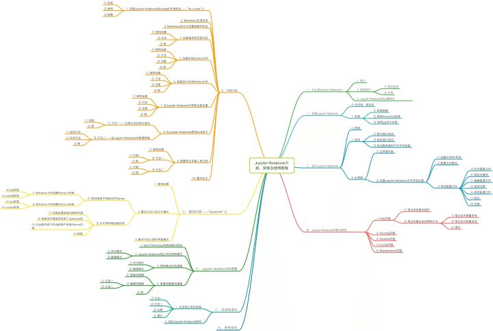
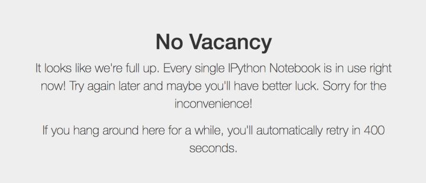
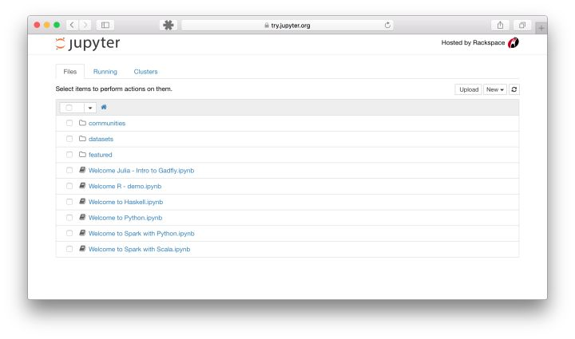

jupyter 简介和安装
本教程来自网址

一、什么是Jupyter Notebook？
边编程，边写文档
1. 简介
Jupyter Notebook是基于网页的用于交互计算的应用程序。其可被应用于全过程计算：开发、文档编写、运行代码和展示结果。——Jupyter Notebook官方介绍
简而言之，Jupyter Notebook是以网页的形式打开，可以在网页页面中直接编写代码和运行代码，代码的运行结果也会直接在代码块下显示的程序。如在编程过程中需要编写说明文档，可在同一个页面中直接编写，便于作及时的说明和解释。
2. 组成部分
① 网页应用
网页应用即基于网页形式的、结合了编写说明文档、数学公式、交互计算和其他富媒体形式的工具。简言之，网页应用是可以实现各种功能的工具。
② 文档
即 Jupyter Notebook 中所有交互计算、编写说明文档、数学公式、图片以及其他富媒体形式的输入和输出，都是以文档的形式体现的。
这些文档是保存为后缀名为.ipynb的JSON格式文件，不仅便于版本控制，也方便与他人共享。
此外，文档还可以导出为：HTML、LaTeX、PDF等格式。
3. Jupyter Notebook的主要特点
① 编程时具有语法高亮、缩进、tab补全 的功能。
② 可直接通过浏览器运行代码，同时在代码块下方展示运行结果。
③ 以富媒体格式展示计算结果。富媒体格式包括：HTML，LaTeX，PNG，SVG等。
④ 对代码编写说明文档或语句时，支持Markdown语法。
⑤ 支持使用LaTeX编写数学性说明。
二、安装Jupyter Notebook
0. 先试用，再决定
如果看了以上对Jupyter Notebook的介绍你还是拿不定主意究竟是否适合你，那么不要担心，你可以先免安装试用体验一下，戳这里，然后再做决定。
值得注意的是，官方提供的同时试用是有限的，如果你点击链接之后进入的页面如下图所示，那么不要着急，过会儿再试试看吧。

如果你足够幸运，那么你将看到如下界面，就可以开始体验啦。


1. 安装
① 安装前提
安装Jupyter Notebook的前提是需要安装了Python（3.3版本及以上，或2.7版本）。
② 使用Anaconda安装
如果你是小白，那么建议你通过安装Anaconda来解决Jupyter Notebook的安装问题，因为Anaconda已经自动为你安装了Jupter Notebook及其他工具，还有python中超过180个科学包及其依赖项。
你可以通过进入Anaconda的官方下载页面自行选择下载；如果你对阅读英文文档感到头痛，或者对安装步骤一无所知，甚至也想快速了解一下什么是Anaconda，那么可以前往我的另一篇文章, 你想要的，都在里面！
常规来说，安装了Anaconda发行版时已经自动为你安装了Jupyter Notebook的，但如果没有自动安装，那么就在终端（Linux或macOS的“终端”，Windows的“Anaconda Prompt”，以下均简称“终端”）中输入以下命令安装：
conda install jupyter notebook
③ 使用pip命令安装
如果你是有经验的Python玩家，想要尝试用pip命令来安装Jupyter Notebook，那么请看以下步骤吧！接下来的命令都输入在终端当中的噢！
1. 把pip升级到最新版本
- Python 3.x
pip3 install --upgrade pip
- Python 2.x
pip install --upgrade pip
- 注意：老版本的pip在安装Jupyter Notebook过程中或面临依赖项无法同步安装的问题。因此强烈建议先把pip升级到最新版本。
2. 安装Jupyter Notebook
- Python 3.x
pip3 install jupyter
- Python 2.x
pip install jupyter